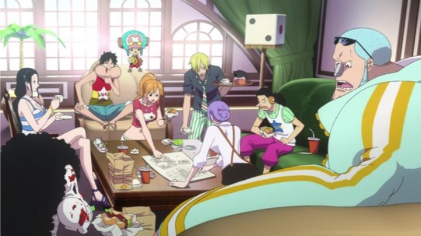

"One Piece" isn't exactly an easy anime to get into circa 2019. The manga has over 90 volumes in print, and is still ongoing, said to be "past the halfway point" of the story. The anime has over 850 episodes at the time of this writing, going back as far as 1999: a newcomer would have to sit down and watch an older-quality of show and watch over 20,000 minutes of anime to catch up to the current story. Actually, if you dedicated 12 hours a day, you could watch the entire thing in about a month... maybe it's not so far-fetched after all. It's just equivalent to about 70 individual "complete" anime shows you could have watched instead.So it's a given that a fan might try to get a taste of the "One Piece" universe through its theatrical films. The films have admittedly gotten better in the past decade, but are still dense, and still suffer from the typical issues found in most long-running shonen action shows: bizarre and ugly character designs, and far too many characters. 2016's "One Piece Film - Gold" still has these problems. But in spite of myself, I actually enjoyed my time with this adventure: it's a genuine summer-style blockbuster that both old and new fans can have fun with. The movie starts with a pretty great opening sequence of Luffy and the Straw Hats crew driving their ship into Gran Tesoro, a massive ship that serves as the world's largest entertainment complex and casino, and so large it is classified as a country of its own. It looks like a fantasy-version of Las Vegas, but with all the buildings built with solid gold. The owner, Gild Tesoro, absolutely loves gold and the power of money, you see - the entire movie brings back memories of the comedy film "Goldmember" with Austin Powers. The opening 10 minutes of the movie accomplishes a lot to get the audience hyped, introducing Gran Tesoro with winding camera shots, and a well-animated action scene that quickly introduces the cast of the Straw Hats, complete with their names appearing on screen one at a time: new fans will get the jist of it, and old fans will feel giddy to have their characters introduced with such pizzazz. It's fitting, since Tesoro is a skilled entertainer. While the Straw Hats came to the ship to gamble and enjoy themselves, they quickly get caught in a setup where they gamble more than they can afford. Tesoro uses the situation to capture Zoro, the crew's best swordsman, as collaterial, threatening to execute him as a public event if the crew is unable to get the money by the following night. Without many options, an opportuntiy reveals itself when Carina, Tesoro's trusted singer, turns out to be a fellow thief from Nami's past, and she asks for the crew's help to steal from the ship's secret vault: if successful, they'll pull off the biggest heist in history, with plenty to spare to pay off their debt and get Zoro back. And so the film turns into... "Ocean's 11?"Yes, the inspriation is obvious. About half of the movie ends up being about the crew devising a plan to sneak into the vault, distracting guards, avoiding security traps, and double-crossing each other, complete with a new stylish wardrobe. Naturally, Luffy doesn't quite get the complex plans, and he doesn't have to: the other characters cheekily admit they didn't bother telling him all the details, since that would only confuse him. The heist-thriller plot doesn't work perfectly, falling apart with a surprise double-double-cross reveal that makes no sense however you describe it. But it's refreshing in a show that typically relies on strong people punching each other over and over. Which... is how the movie ends by the final act. Overall, the plot of the film actually works well, if only because it is a (mostly) standalone piece from the rest of the "One Piece" saga. And because of great showmanship. When there appear to be no major stakes in the first part of the movie, we're on board with the crew, having as much fun as they are being the new high-rollers of the casino resort, exploring the vast entertainment complex. The movie has style and class. When things fall apart for the Gran Tesoro by the end, colors turn to grey, and the obvious theme of the power (and dangers) of money and gambling are well-realized. Yes, it might not be an uncommon message, but our reliance on money (and the otherwise uselessness of material wealth) is an easy theme to relate to, grounding the stakes to feel much more tangible than a typical "One Piece" adventure. The only major faults in the story (aside from being simple, or having convuluted twists) is the appearance of a few side-characters that appeared somewhere in the 800+ episode history of "One Piece." This isn't the first time this has ruined a "One Piece" movie for me: I don't know who these extra characters are, I don't care who they are, and the movie doesn't even try to tell me. It's fanservice meant only for fans. Thankfully, their inclusion has little to no relavence to the plot or the major dramatic payoffs, so new fans shouldn't feel like they are missing much, and old fans might squeel at their appearance. Even so, at a runtime of two hours, the movie would have only benefited by removing these five-minutes-worth of scenes all together, and the plot wouldn't notice."One Piece Film - Gold" also looks better from a production stand-point than usual. The Straw Hats have never looked this good before. Yes, they still look weird, and new characters still suffer from bizarre choices (Tanaka, one of Tesoro's henchmen, is a short man with a head the size of a house, constantly snearking with a "zuzuzuzuzu" noise... why is this considered good character design?). But most of the strange choices are for comedic benefit to the world the film is set in: look only to the strong turtles that power automobiles and the snails on every lamp-post that provide survellience video, connected to a massive snail with a moustache. That's funny, darn it! The animation is also usually a low point for "One Piece," but here, the first half of the movie alone has more shots with smoother motion than the entirety of the tv series. Even with 3D buildings making up the city, and occasionally 3D people to allow for those complex camera shots, the movie just feels extravagent. Sexual fanservice has been a bit more of a thing in recent iterations of "One Piece," and "Film - Gold" uses this a little more given the sin-fueled city it's set in, but it's not so over-the-top that I would feel uncomfortable for a child to watch the movie.The music is updated to be appropriately catchy and jazz-like, fitting for the Las-Vegas-styled world and the "Ocean's 11" plotline. The English dub is good, and I didn't at all feel like any of the actors were tired of playing these characters yet.I'm not an expert on the "One Piece" universe. I'm not even really a fan. If you ARE already a fan, you've probably already seen this movie. But even as an outsider, I can admit this is a fun movie to watch with friends, and with the limited exposure I DO have on the "One Piece" movies, I can feel fairly confident in saying this "One Piece Film - Gold" is one of the better ones to sit down with. Here's hoping the stories continue to refine in future movies.
- "Ani" More reviews can be found at : https://2danicritic.github.io/ Previous review: review_Okko's_Inn Next review: review_One_Piece_Film_-_Z